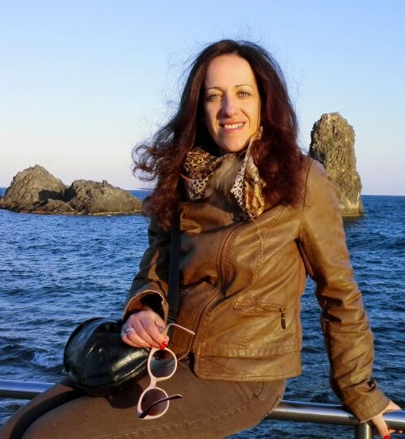

Program
September 20, 2022, 09:00 - 11:30 (hybrid event)
-
09:00 - 09:10 Opening
-
09:10 - 10:00 Keynote: "On architecting software with lightweight formal models at runtime for the assurance of correct operation" by Patrizia Scandurra, University of Bergamo, Italy
-
10:00 - 10:30 Paper #1: "A Maude Formalization of Object Nets" Authors: Lorenzo Capra and Michael Köhler-Bußmeier
-
10:30 - 11:00 Break
-
11:00 - 11:20 Paper #2: "Towards Online Testing Under Uncertainty with Model-based Reinforcement Learning" Authors: Matteo Camilli, Raffaela Mirandola, Patrizia Scandurra and Catia Trubiani
-
11:20 - 11:30 Closing
Keynote Speaker: Patrizia Scandurra

Bio: Patrizia Scandurra is Associate Professor at the Department of Management, Information and Production Engineering of the University of Bergamo (Italy). Her research interests are in software engineering with particular attention to software architectures and formal methods for software modeling, validation, verification and testing. Her research focus is the design and runtime analysis of self-adaptive, autonomous distributed software systems operating in uncertain environments. She regularly publishes the results of her research in international conferences and ranked journals. She has been a member of the organizing and program committees of international conferences/workshops of formal methods, software architectures and self-adaptive software systems, such as ISSRE, ABZ, ECSA, ICSA, SEAMS@ICSE, SA-TTA@SAC, and FAACS@ECSA. She has been involved in several national and European projects on
themes such as model-driven development for embedded and robotic systems, adaptive software architectures for pervasive systems, and enforceable trust in Cloud-based software applications. She also collaborated with R&I (research and innovation) groups of industries/organizations like STMicroelectronics, Atego, Bialetti, and the ENEA Smart Cities & Communities lab.
Title: On architecting software with lightweight formal models at runtime for the assurance of correct operation.
Abstract:
Today software systems call for built-in adaptive mechanisms to handle faults, resources, and attacks while operating in much more uncertain environments. In the last decade, mathematically-based techniques from the area of formal methods have been successfully employed at runtime to provide evidence for requirements compliance of self-adaptive software systems. Usually, existing approaches to providing assurances for self-adaptive systems are based on formal verification techniques (like model checking, runtime verification, and quantitative verification). More lightweight validation-based approaches (like sanity checks and runtime simulation) have been given much less attention. This talk provides a quick overview on current strategies for making formal models an integral part of the target running system's architecture, and on existing on-line versions of verification techniques for the runtime assurance of the desired, correct system operation. This talk then complements such preliminary efforts by exploring the possibility to exploit lightweight, formal validation techniques at runtime. In particular, the talk focuses on the safety assurance of software systems via safety enforcement mechanisms for observing and steering the running software system. We present how we have exploited the runtime simulation of Abstract State Machines (ASMs@run.time) to realize runtime models of safety enforcement strategies. The talk concludes with a discussion of the challenges in employing formal methods at runtime and of the future research required to overcome them.